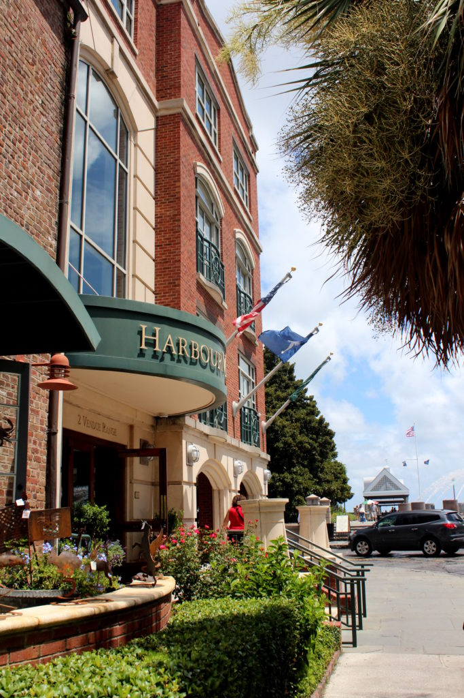
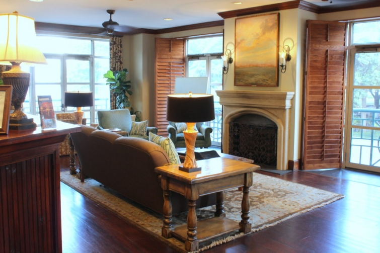

.png)
.PNG)
.PNG)
.PNG)
.PNG)
.PNG)
.JPG)
.JPG)
.PNG)
.PNG)


Our road trip through North Carolina continued on into South Carolina. (I should have called this the “Carolina road trip,” right?) The entire purpose of this trip was so that our daughter could visit a number of cities to see where she might want to work when she finished her time working at Disney. For someone interested in a career in the hospitality field, Charleston, South Carolina seemed like a very logical place to look.

Charleston is quintessentially Southern. I’ve always felt that Savannah, Georgia was the city of the South, but Charleston has replaced it in my mind….and for only one reason: Savannah seems younger to me, a little more relaxed and casual, and Charleston feels a little more mature and refined. (But that is just my opinion. Ask anyone else who has been to both, and you are likely to get an entirely different viewpoint. 🙂 )

Like Savannah, Charleston has sooooo many wonderful places to stay…from hotels to inns to bed and breakfasts and more. It took me a very long time and a tremendous amount of research to decide on our accommodations for our time in The Holy City (named so because of the religious freedoms and large number of places to worship there.)

My first requirement was that our hotel should be located so that we could walk to shops and restaurants downtown. That still left a large number of choices. After that I was able to weed out a number of them because they were simply over our budget; a number had not-so-great-reviews (like old, dated rooms, not clean, etc.) and a few felt more formal than I thought we would be comfortable staying in.

The HarborView Inn then ended up being my choice. Not only was it within walking distance of so many places we wanted to see, but it also had water view rooms… and they had a special going on at the time we were to be there. (Free parking and 15% off, I believe.) So I called…and…they were booked. 🙁

But I called back a day or two later. There had been a cancellation, and we were lucky enough to get a room! 🙂

Our room in the inn was large, and I loved those four poster beds!

A small seating/dining area was in the corner.

The cabinet designed to hold clothing and the television was beautiful.

The beds were extremely comfortable, as were the pillows. In fact, our daughter was so impressed with the pillows that she asked for one for Christmas! She did a little research, found out they were made by Harris Pillow Supply, and her brother got her one for a Christmas present.

The bathroom was quite large enough for the three of us to store all our toiletries and not feel crowded.

Gilchrist and Soames bath products were provided in each room.


Before we arrived, I contacted the staff there at the HarbourView to let them know that the day of our arrival was our daughter’s birthday. I asked if they could get a small cake, cupcake, or really anything to have waiting for her as a surprise in our room, I would greatly appreciate it. (Thinking they would simply add it to our room charge.) Well, they surprised all of us with a complimentary bottle of wine waiting for her on the desk in the room…

and…

a birthday card and cupcake bedside! (Talk about customer service! 🙂 )
Oh, and our staying there was also a surprise for her. I had told her we could not get reservations at the HarbourView and would be staying at a Hyatt. So she was doubly delighted with our accommodations! 🙂

After we looked around the lobby, the room, and the coffee/tea area, we went upstairs to check out the rooftop terrace.

It had quite a view of the city…

and the water front. 🙂

There were a number of included amenities that really made staying at the HarbourView especially nice. Complimentary snacks and iced tea were available all day in the lobby. Cookies, milk, and candies were served there in the evening, and complimentary coffee was available in the atrium lobby all day long. Also, a very nice breakfast with pastries from a local bakery was included in the room rate. You could enjoy your breakfast in the atrium lobby, on the rooftop deck, or have it delivered to your room (as we did.)


When we return to Charleston again, I know we will chose the HarbourView Inn again. (And no this is not a sponsored post! 🙂 ) You just can’t beat all the amenities and its location.

Now that I have shared with you where we stayed, I want to show you all the places we visited and where we dined while in Charleston. It was a lot of walking! In fact, my Fitbit hit over 16,000 steps in one day there – second only to a day at Disney. (I’m a walker not a runner.)

But this post is already long enough, so that will all be coming up in the next one.
Hope to see you back here for that very soon!
🙂
Until next time…


.PNG)
I always enjoy your travel posts. They are informative and
the pictures are great. Good luck to your daughter with her
city and job search. I have been to Charleston and Savannah and
your post makes me want to go again soon.
Kelly,
What a fun trip! Thanks for sharing it with us! I can’t wait to see what is next!
Dawn
Kelly, I am so glad you enjoyed Charleston. My daughter has lived in Charleston for 5 years. It is my favorite place to go. No matter how many times you have gone, there is always something new to do and new places to dine. Can’t wait to see your next post to see what you did while there.
We are going to be in Charleston for one night the first week of April! We are traveling from Michigan through Georgia to Florida and then to Charleston one night and then to Columbia to visit family for 2 night then back to Michigan! I loved the Harbor View….yikes thought $400 a night! Did you find a coupon code to use to lower the cost?
———————————————————————
They had a special going on at the time…free valet parking and a percentage discount. I did not look for a coupon….just a special they were running at the time. The parking can really add up there in Charleston.
Have a good trip! April will be a beautiful time to be there!
Kelly
the Harbourview Inn looks like the perfect place to stay. Glad you were able to get a reservation. Beautiful views and sounds like great hospitality. How fun to surprise your daughter also. 🙂 I’m sure you and your husband had a wonderful time just spending time with your daughter. 😉 Looking forward to your next post seeing as we are going to Charleston this fall.
Kelly,
Charleston has been on my “list” for ages. I have a very good friend that said it’s her favorite “southern” city, and she’s traveled extensively in the area. Thanks for sharing.
xo,
Karen
Hi Kelly! I love Charleston and hope Hayley ends up there. What is so special about the Harborview pillows? Thank you. Julia in Cincy
——————————————————————–
Julia, I don’t know exactly what it is that she likes about the pillows. They just seemed very comfortable and held their shape well.
Kelly
Charleston is a truly beautiful southern city. My oldest daughter and I went there on a Ladies Retreat and another time I went with the youngest on a business trip to North Charlestown. I got to explore the downtown area and market, take a carriage ride, and went out to one of the plantations. Would love to go back and see it all again. We enjoyed the wonderful food and seeing the homes, plus meeting the locals who were very cordial. It is very sad when the storms flood the city and the homes. Don’t you love all the wrought iron? Thank you for your lovely account of your trip. 💕
———————————————————————
It sounds like you have had some very fun trips to Charleston, Louvina! Our daughter was there a couple of weeks ago and did the carriage ride then. We missed out on that when we were there last summer (but I felt so sorry for the horses in that heat.) The hurricane that hit the city did sooo much damage, and it damaged a major part of the newly built water front park at the time. Amazing how they can rebuild it to look even better. 🙂
Kelly
Goodness, this hotel looks awesome! What great views of the water. I just can’t wait for the next post! I’ve been to Charleston many times but if I know you…. you’ll show us some cool place I’ve never even heard about!
Have a great weekend, Kelly!
——————————————————————–
It was an awesome place to stay, Katrina! If you have been to Charleston many times, I bet you have seen all that we did in the short time we were there. Next time we go, you will have to share your recommendations with me! 🙂
Kelly
It looks wonderful Charleston is one of my favorite places on earth! We tried to get a reservation at the same hotel but it was also full. Must be very popular. I hope you had a chance to visit Beaufort while you were there. It is a mini Charleston.
Love the pictures of your trip, some of my favorite places.
——————————————————————
Hi Linda! Yes, I think the HarbourView must be popular, particularly for its waterfront location. I’m sorry you were unable to get reservations there. We did stop by Beaufort on our way home, but we visited it a few years ago. It is a fun town to see…and so artsy! You can see the post about it here if you would like: http://www.talkofthehouse.com/a-trip-to-south-carolina-beaufort/
Thanks for reading and leaving a comment on the post today!
Kelly
We visited Savannah & Charleston last spring…and can’t wait to go back. We took a walking tour of Charleston, guided by an eighth generation, I believe, Charlestonian. She was in her sixties and walked like a 30-year-old…knew everyone in town & took us down some secret paths with lots of interesting local lore. Locals stopped and talked to us one even invited us into her garden, which was breathtaking. I believe the name of the tour is “Two Sisters” if anyone is interested.
——————————————————————
Thank you sooo much for the tour info Cheryl! I definitely want to do that the next time we are in Charleston!! Sounds like the perfect tour and the perfect tour guide. 🙂
Kelly
Charleston is absolutely the best. My daughter and I have been twice and are going again in June. We always stay at the French Quarter. It is a beautiful hotel with a lot of amenities and is right next to the open market and downtown. It’s just beautiful. Highly recommend!
——————————————————————–
Lucky you going again in June, Sue! I looked at the French Quarter, and if we had not stayed at HarbourView, the French Quarter was definitely one of our other choices. Its location near the City Market was great. We just liked being near water with the HarbourView Inn.
Have fun on your next trip!
Kelly
A few years ago I went to Savannah and really enjoyed the city. Your trip to Carolina reminds me of the charm.
———————————————————————-
There are certainly a lot of similarities between the two cities…and they aren’t that far apart from each other. Glad you enjoyed Savannah!
Kelly
That hotel sounds like heaven to me! My husband is of the bargain/no frills cheap places to stay, but I have put my foot down on a few of them on our travels. It must be clean, fairly updated, have coffee at all times day or night, and good heating/cooling. Most of the time it seems we stay at Baymonts or their relatives. I would love to have a bit more glam at some point!
I looked at the site for the pillow, and wonder which choice Haley made? Their prices are really good if they are awesome as Haley says.
I look forward to the rest of your visit, but I would not be able to handle that much walking in one day, and still be able to move the next! These old bones don’t bounce back quickly! 😉
———————————————————————
I so agree with your requirements for a hotel room Marianne. The pillow our daughter received was a queen size Heavenly Down (synthetic) pillow. Yes, it was a lot of walking….but I had been doing a few miles a day on my treadmill so I was somewhat prepared for it. (But the heat and humidity there were quite tiring!)
Have a good weekend!
Kelly
Hey Kelly, I enjoyed your blog about favorite places to go….Charleston and Savannah. I’d love to have a room with a water view in Charleston but being that we are antique fools we love to stay at the John Rutledge Inn. It’s a bit pricey but we don’t go every year. They recently changed to a pet friendly Inn. Fortunately the room we always ask for is one of the pet friendly ones. What we love the most about it is the wonderful breakfast they bring to our room. As far as comparing Charleston and Savannah walking through the old neighborhoods soaking in the beauty of the architecture surrounding you is completely different. Charleston homes are stately, elegant and refined. About the only sound you hear is your footsteps or an occasional lawnmower in the distance. You can get away from the hustle of the business section. In Savannah, to walk through the homes and get that same kind of feeling you better plan your walking for a Sunday. Traffic is an issue as you walk around the squares and the homes are different depending on which section you are in but in general you don’t see the elegant kind of homes Charleston has. Each city is unique as it should be. Ken says if you want to see beautiful old trees look in Savannah. We used to stay there at a B&B, Presidents Quarters which is really nice but we prefer being closer to the river so the inns along River Street are our preferences….Old Harbour Inn is our next place since they have pet friendly rooms. We usually stay at the River Street Inn and have found a corner room where we can lay in bed and watch the ships come into view at the bridge and watch it pass by without having to get up. Ahhhh! Well I didn’t mean to write my own blog but you did mention comparing them.
———————————————————————–
Yes, you DID write a novel, Lee! But we all appreciate it! It is good to get other recommendations and other viewpoints for traveling, and a lot of readers come here for travel info. So thank you for all of it! You and Ken should love both Savannah and Charleston with their abundance of antique shops. 🙂
Kelly
We have been staying at the Harbourview Inn for years. We live in Charlotte, NC and Charleston is our favorite place to visit. When there was “no room at the inn”, we’ve stayed at other lovey places, though for us, our number one choice is ALWAYS Harbourview Inn.
We most enjoy the COMPLIMENTARY wine and cheese served EVERY afternoon. That way after a day of enjoying the sites – all within walking distance, we can relax in the living area sipping wine, eating cheese, grapes and snacks, all while chatting (love to chat!) with other guests. We also enjoy swinging on those giant swings across the street late at night. So relaxing, so beautiful…..
Must book a mini vacation soon….. 👍🏼
—————————————————————–
Yay! I am so glad to know we didn’t overlook some place a lot better when we chose the HarbourView.:) Yes, they do have a complimentary wine and cheese hour. We are “teetotalers” so the complimentary milk and cookies were more our speed. LOL Plus we seemed to be out at the time of the wine and cheese hour, but it IS a nice amenity that they offer there. We will have to remember to check out the swings across the street on our next visit! Hope you get to go back soon!
Kelly
We love Charleston! We will have to check out that hotel next visit! Do you eat any special way with your Fitbit or just try to get the recommended 10,000 steps in?
———————————————————————-
Yes, Vicki, do check out the HarbourView. It is lovely!
When I started with the Fitbit last summer, I was getting in the recommended steps, drinking 64 oz. of water daily, and keeping my calories at around 1200 a day (which my kids and husband said was NOT the right way to do it…they said I should be looking at the nutritional value and fat content of the food – not just the pure calories.) Anyway I lost 12 pounds in about 2 months. But since Christmas I have gained 5 back, and I am trying to lose it with portion control (and cutting out sweets and drinking water water water.)
Kelly
What a wonderful hotel and Charleston is one of our favorite cities! I can’t think of a more wonderful place for your daughter to work. Happy weekend, Kelly!
——————————————————————
Yes, it is wonderful there! In fact, the entire state of North Carolina had sooo many good places that I think she would enjoy working. 🙂
Kelly
I have an aunt that lives near Charleston, but I’ve never really visited the city. Thanks for the post. (And, I checked with your daughter about which pillow was ‘Christmas’ pillow, and if she still likes it…and, she does!)
——————————————————————-
Hi Bonnie! The next time you visit your aunt, you NEED to go to Charleston for the FOOD (if nothing else!) I could eat my way through that city with all the fabulous restaurants there. 🙂 And yes indeed, Hayley loves that pillow!
Kelly
Your post caught my eye right away because that is the exact hotel I stayed in on my girls trip to Charleston a few years ago! Didn’t you just LOVE it?!! Your photos are so beautiful and really capture the feel of that lovely place. I wrote a post on it too a couple years ago if you want to swing over and check it out at some point. Thanks for bringing back some wonderful memories! Have a great weekend!
Shelley
———————————————————————
Oh how fun! Yes we did love it! Thank you for your sweet comments Shelley. I am so glad the post could bring back good memories for you. I hopped over and read your post. Great photos! And I wish I had taken a photo of the m&m’s too! (I wanted to include one here but never took a photograph of it. 🙁 ) We both should have had someone stand on the stairs when we took our shots of the map just so our readers could get an idea of the ginormous scale of it! It looks like they have changed the bathroom lighting since you have been there. Hope you and your friends have another great trip to Charleston soon!
Kelly
p.s. I read another of your Charleston posts while over at your site. Can’t believe out of all the places to eat there we too dined at Fleet Landing! Too funny!
Now I want to go to Charleston!!! I love that hotel!! Thanks for sharing and will visit with you next time.
——————————————————————-
Yes, you should just go right ahead and plan a trip there Jo Anne! 🙂
Kelly
Thank you for the information on Charleston, SC. It is timely for us as we will be attending a wedding there in September. Your comments on your travels always make me want to go wherever it is.
Thanks!
——————————————————————-
Oh a wedding in Charleston would be gorgeous Lynne! That will be such fun! Be sure to check the next post for places to shop, see, and dine while there.
Have a great weekend!
Kelly
What a wonderful place to stay in Charleston…Charleston is a city that I never tire of visiting again and again….Have never stayed at the Harbour View Inn and will be making note of this beautiful place. So wonderful that they made such a special stay for your daughter’s birthday.
——————————————————————–
Yes, you could visit Charleston again and again and not even dine in the same restaurant twice! Do check out the HarbourView the next time you are there Shirley. It is easy to get to if you are at the Water Front Park.
Have a great weekend!
Kelly
NO! That post was not nearly long enough! What a pretty place! I can’t wait for the next three posts about Charleston and to hear where Hayley chooses to work. I didn’t know Charleston was in the running. I would pick it in a skinny minute!
——————————————————————–
Sorry Kathy! The next part had 30 photos, and there was just no way to break it up. And I didn’t want to write a novel with 50+ photos in just one post. 🙂 There are two more posts coming on Charleston..but I may throw in a house one next to break it up some since not everyone is thrilled with travel posts…or just go ahead and finish up the trip. Not sure yet. I just know the next post will be Sunday. #impossibletopleaseeveryone
Hope you have a fun weekend planned!
Kelly
Happy Friday, Kelly! Your hotel of choice looks so inviting, the beds look so luxurious and crisp and clean. Looking forward to the tour. T
———————————————————————
Happy Friday to you too, Tricia! It really was a great place to stay. 🙂 Thank you for reading the post and leaving your kind comment. Hope you have a fun weekend ahead of you!
Kelly